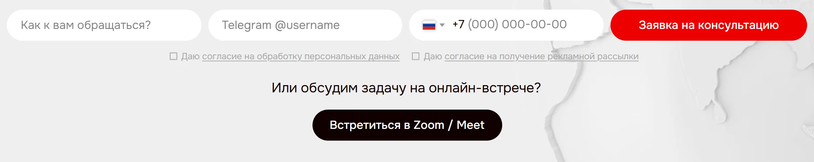
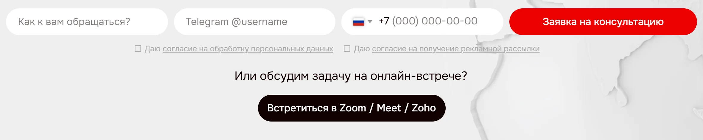
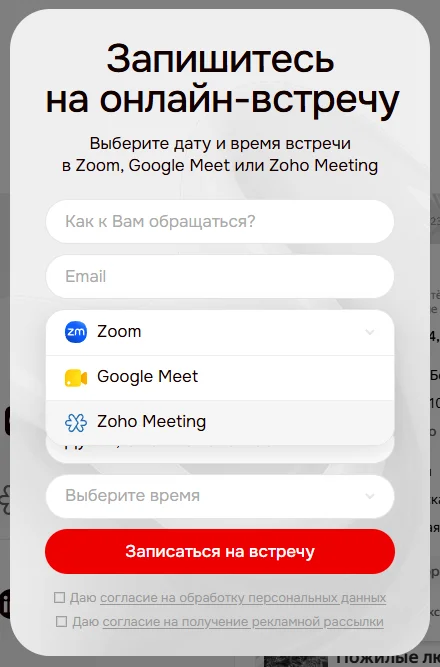
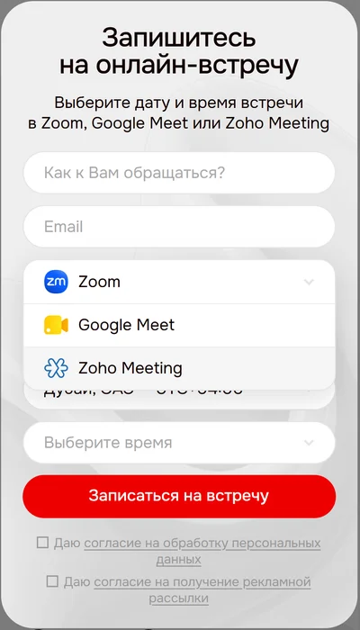

Zoho Meeting — третий формат встречи. Код готов, включение — после токена Zoho и правки двух блоков в Tilda
Попап записи, кнопки на сайте, поле в сделке и постоянная комната под каждую сделку — так же, как у Zoom и Meet. После звонка в ленту сделки ложится журнал: кто был, сколько, ссылка на запись.
1Что сделано и что осталось
| Где | Что | Статус |
|---|---|---|
| amoCRM | Поле сделки «Ссылка Zoho» (id 1003765, тип «Ссылка», только для API, стоит сразу после «Ссылка Meet»). | готово |
| Воркер amo-zoho | Новая заявка → комната Zoho Meeting → ссылка в поле. Клик по ссылке переносит встречу на «сейчас» и пускает в комнату. После звонка — примечание с участниками и записью. | ждёт токена Zoho |
| Попап записи | Третий формат «Zoho Meeting» со значком, новый подзаголовок, письма и задачи с Zoho, учёт явки по отчёту участников Zoho. | ждёт выкладки |
| Ссылка для Димы | Адрес с хэшем #neoved-meeting-zoho открывает форму сразу с выбранным Zoho Meeting — и по клику, и при открытии страницы. | ждёт выкладки |
| Карточка контактов | Дима уже поставил кнопку «Zoho Meeting», но боевой скрипт карточки принимает её за Google Meet (в «Zoho Meeting» есть «meet») — исправлено. При наведении кнопки видеовстреч теперь краснеют целиком, как мессенджеры: текст и значок #EE0000, белые детали значков остаются белыми. | ждёт выкладки |
| Кнопки в Tilda | Текст «Встретиться в Zoom / Meet / Zoho», ширина обеих кнопок 315 px на десктопе, 550 px на планшете. | делает Дима |
2Для Димы: кнопки на сайте
Кнопка Zoho в контактах
В строке «Видеовстреча» рядом с Zoom и Google Meet. Ссылка элемента:
#neoved-meeting-zoho
Попап откроется сразу с Zoho Meeting. Кнопка, собранная копией группы Zoom / Google Meet (класс cardzm) с текстом «Zoho Meeting», работает и без ссылки — так она и стоит сейчас. Красное наведение для всех трёх кнопок делает наш скрипт карточки, в Tilda ничего менять не нужно. Ссылка для любой страницы и для рассылок:
https://neoved.io/o-nas/kontakty#neoved-meeting-zoho
Текст кнопки 1 — во всех формах
Встретиться в Zoom / Meet / Zoho
Кнопка стоит на всех 200 страницах, но исходников два — синхронизированные Zero Block:
- главная — блок
rec5504152701, он стоит на 199 страницах из 200 - /produkty/mezhdunarodnyy-platezh — блок
rec3827952501, он стоит на 120 страницах (на 119 — вторым, ниже первого)
После правки — опубликовать все страницы, где стоят эти блоки (Tilda предложит сама).
Ширина кнопок: замер на живом сайте
Шрифт кнопок — Onest 17 px, 500. Сейчас кнопка 1 — 275 px, кнопка 2 «Заявка на консультацию» — 285 px: ощущение «первая короче» верное. Новая надпись занимает 284 px.


| Экран | Кнопка 1 сейчас | Кнопка 2 сейчас | Поставить |
|---|---|---|---|
| от 1200 px | 275 px | 285 px | обе 315 px: кнопка 1 — ширина элемента; кнопка 2 — ширина кнопки в настройках формы, поля формы ужмутся сами |
| 640–1199 px | 275 px | 550 px | кнопка 1 — 550 px, как поля и кнопка формы над ней: в 275 px новая надпись (284 px) не помещается вовсе |
| до 640 px | 320–440 px | 320–440 px | без изменений: шрифт 15 px, надпись 250 px — помещается с запасом |
3Попап записи


Что поменялось
- Третий формат «Zoho Meeting» с официальным знаком Zoho (#226DB4) — в форме и в письмах.
- Подзаголовок: «Выберите дату и время встречи / в Zoom, Google Meet или Zoho Meeting». Прежняя вторая строка с тремя форматами (420 px) вылезала за карточку (350 px).
- Открытие по адресу: страница с
#neoved-meeting-zohoоткрывает форму сразу; хэш потом убирается, чтобы обновление страницы её не открывало снова.
Как попап выбирает формат
#neoved-meeting-zoom,-meet,-zoho— сразу нужный формат;#neoved-meeting— без выбора.- По тексту кнопки: «Zoom», «Google Meet», «Zoho Meeting» — свой формат; «Zoom / Meet / Zoho» — без выбора.
- В «Zoho Meeting» есть «meet» — Google Meet узнаётся по «Google» или по «Meet» без «ing», иначе кнопка Zoho открыла бы Meet.
4amoCRM: комната под сделку и журнал звонка
Новая заявка
Как у Zoom и Meet: сделка на этапе — воркер заводит встречу в Zoho и пишет в поле «Ссылка Zoho» постоянный адрес hooks.neoved.io/amo/amo-zoho/j/….
Клик по ссылке
Zoho пускает без организатора только за час до назначенного времени, поэтому клик переносит встречу на ближайшую минуту и уводит в ту же комнату. Ссылка не меняется никогда.
Разговор
Раз в 5 минут воркер читает отчёт участников Zoho: кто вошёл, когда вышел. Пока кто-то в комнате — ждёт.
Журнал в сделку
Все вышли — в ленте примечание «Звонок · Zoho Meeting»: время, длительность, участники с входом и выходом.
Запись
Если встречу записывали, ссылка на запись — в том же примечании или отдельным, когда Zoho её обработает (ждём до 12 часов).
Явка по записи с сайта
Для записей из попапа — то же «Явка на встречу» и флажок «Опоздание», что у Zoom и Meet, по отчёту участников Zoho.
Как выглядит журнал в ленте сделки
Звонок · Zoho Meeting 25.11.2026, 15:02–15:41 МСК · 39 мин Участники (2): — ivan@example.com: 15:02:10–15:41:05 (38 мин) · браузер — director@neoved.io: 15:03:00–15:41:30 (38 мин) · организатор, приложение Запись: https://meeting.zoho.in/meeting/videoprv?recordingId=…
MANAGER_ALIASES); вошедший организатором считается менеджером автоматически.5Что Zoho Meeting умеет на нашем тарифе
| Возможность | Workplace Standard | Что это значит для нас |
|---|---|---|
| Zoho Meeting в тарифе | да | Отдельно платить не нужно: до 100 участников, встреча до 24 часов. |
| Запись встречи | да | 5 ГБ на организатора. Записывает организатор; есть настройка «Auto-record meetings». Пишет ли автозапись без организатора, Zoho не пишет — проверим первым звонком. |
| Вход без организатора | за час до начала | Настройка «Allow participants to join before the host». Постоянной ссылки «входи когда угодно» нет — поэтому перенос встречи по клику. |
| Расшифровка и конспект | нет | Только на Professional. Zia там пишет расшифровку на английском и требует свой ключ OpenAI. Конспекта «как Zoom AI» у Zoho сейчас не будет — в сделку идут журнал и запись. |
| Отчёт участников по API | да | Почта, роль, вход, выход. Имён нет. |
| Вебхуки о звонке | не нашли | В документации их нет, поэтому воркер опрашивает Zoho сам раз в 5 минут. |
6Запуск по шагам
Код в Self Client
api-console.zoho.in → Self Client → Generate Code, срок 10 минут, права ниже. Организатором встреч станет тот, под чьей учёткой создан код.
anton или руководительОбменять код
Сразу, код одноразовый: node zoho-token.mjs <код> в папке amo-zoho-worker — или прислать код в чат.
Настройки Zoho Meeting
Settings → Organization → Meeting: включить «Allow participants to join before the host», выключить Auto-lock и E2EE; по желанию — «Auto-record meetings».
админ Zoho (admin@)Выложить amo-zoho
deploy_vps.py в amo-zoho-worker, затем вебхук: node register-webhook.mjs.
Выложить попап и контакты
deploy_vps.py в amo-booking-worker и neoved-kontakty/deploy.py. Скрипты на сайте обновятся сами за 5–10 минут.
Пробный звонок и Tilda
Тестовая запись на Zoho, вход по ссылке, журнал в сделке. Дима меняет кнопки и ставит ссылку в контакты.
anton, ДимаПрава для кода Self Client
ZohoMeeting.manageOrg.READ,ZohoMeeting.meeting.ALL,ZohoMeeting.recording.READ
JSONString={…}; воркер при отказе пробует форму и чистый JSON), поля ответа user.json, нумерация страниц отчёта участников, пишет ли автозапись без организатора и не шлёт ли Zoho организатору письмо на каждый перенос встречи.7Источники
- Zoho Meeting API: Create a meeting —
POST /{zsoid}/sessions.json, обязательные topic, presenter, startTime; ответ с meetingKey и joinLink. - Zoho Meeting API: Edit Meeting —
PUT /{zsoid}/sessions/{meetingKey}.json, право ZohoMeeting.meeting.UPDATE, телоJSONString. - Zoho Meeting API: Participant Report — почта, роль, joinTime, leaveTime; имени в ответе нет.
- Zoho Meeting API: Get specific recording — ссылки на запись, конспект и расшифровку, флаги isSummaryGenerated и isTranscriptGenerated.
- Zoho Meeting API: Authentication — список прав ZohoMeeting.*.
- How to enable «Join Before Host» — только платные редакции, вход за час до начала, без Auto-lock и E2EE.
- Zoho Meeting: General Settings — «Auto-record meetings».
- Zoho Meeting: сравнение тарифов и Zoho Workplace: цены — Meeting входит в Workplace Standard; запись есть, расшифровки и Zia нет.
- Zoho Meeting: Zia — нужен ключ OpenAI, расшифровка только на английском.
- Логотип Zoho Meeting — официальный SVG с zoho.com; в попапе и письмах только знак.
- Замеры кнопок и проверки попапа — на живых страницах neoved.io (главная, /kontakty, /produkty/mezhdunarodnyy-platezh) в Chromium и WebKit.